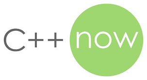

Science at C++NOW 2018

I finally went to C++Now. I have been told it is the place to see the science of C++ happening. The best and the brightest in the C++ community try to push the language forward. I feel it is more science then engineering because of the ways ideas are floated out here to see if they catch on or fail. You will see the audience participating, by catching mistakes or explaining problems that the presenter might not have thought of, in the hope of making each idea more solid. It is a little different then it's big brother CPPCON which is more of an engineering conference. Not to say CPPCON is bad, you will learn about the state of the art building practices, but you are a little less likely to see some of the science happening. (at least in the official CPPCON presentations anyways you can see it happening at lunch or in the bar).
I think Matt Godbolt was saying there is only about 150 people at C++Now so you really get to know everyone while you are there. (150 is also the Dunbar's number interesting) So it is nice to get to know some of the stars of the C++ community by name as you are walking around (and getting lost) at this conference.
Each time I have gone to CPPCON I have always had a group of EA people who I knew there with me. At C++Now no one came with me so I was “forced” (in a good way) to hang out with different people. This was a great way to see how other companies and industries are both similar and different to games.
It is funny being at C++Now as a games programmer. I feel like one of the bad boys of the software industry. So very cowboy always shooting from the hip. Vittorio Romeo's (from Bloomberg) tweet shows the feeling. Having spent more than 10 years on FIFA probably one of the more buttoned up parts of the games industry it is odd to feel like a cowboy coder. Yes, maybe no one dies when we have a bug but I think you are still going to want to make sure your code is solid. If 10M fans are playing your game, your users will find every bug your QA has found and a few more they didn't.
Anyways finally my favorite video from C++Now was posted so I think I can finally finish my blog post. Here is a list of video and presentations from C++Now 2018 I liked.
Allocators and Hash tables
Malte Skarupke “You Can Do Better than std::unordered_map: New Improvements to Hash Table Performance”
Malte Skarupke talk was very timely for me as my co-worker Andy Younger has been working on one that I used for the memory debugging systems at EA. Besides the video Malte's
blog is also quite good on the subject of hash tables. This was my favorite talk from the C++Now given applicability to my job and my interest. It
is a bit CPPCON like in he talked about pushing the boundary hash tables more than C++ interfaces and language trade offs. He just happened to use C++ to make a really fast hash table. Malte’s work is kind of surprising in that
if found adding a level of indirection helped his hash map. Most fast hash maps I have seen have been some version of a open addressable hash map with as few levels of indirection as possible. He also found that googles hash table
that was announced at CPPCON 2017 didn’t seem to be as fast as we hoped. At EA we hit the same problem with Andy Younger's work. Our problems being different we got different answers. Our hash table is tuned for lots of inserts
and deletes with almost no reads, kind of an odd case. Malte's hash table are focused on the the more standard problem of lots of reads only a small number of inserts and deletes.
David Sankel “C++17's std::pmr Comes With a Cost”
I really liked David Sankel talk at CPPCON “So, you inherited a large code base...” last year and I know that Bloomberg has done a lot of good standard
work on allocators for STL so I figured this talk would be interesting for me. David did another great talk. This talk really hit home as the problems they talked about sound the same as the ones we had in FIFA pre-frostbite. David
talked about std::vector and std::prm::vector and the problems with having both of these and when to use one or the other. In EA we had eastl::vector and EASTLICA::Vector (ICA is icoreallocator our polymorphic allocator). I talked
about this in my
2015 CPPCON talk on memory debugging. Once we went to frostbite and added an arena map most (maybe 80%) of the EASTLICA::Vector use could be removed. An
arena map is a map from address to the allocator that could free (or alloc) in this part of memory. We use this arena map to find the allocator for the vector itself (IE what allocator could have allocated the 3 pointers of the
vector) and then use that to allocate the elements in the vector.
Multithreading
Tony Van Eerd “The Continuing Saga of the Lock-free Queue: Part 3 of N"
Tony is a very bright guy working on high end projectors. I like his advice on lock-free programming, don’t do it, but if you do measure it might be slower. If you want to make a lock free queue you could do a lot worse
than listen to this talk. Tony’s explanations are very clear and well thought through you can tell he really knows his stuff. You might not want to write lock free code very often as it is dangerous stuff but if I need to do it
(or update someone else's work) I would listen to Tony again.
Internals of compilers
John Regehr “Closing Keynote: Undefined Behavior and Compiler Optimizations”
I know only a bit about compilers, so this was a very nice overview of some of the ideas behind newer ones like clang. It shows that some Undefined Behavior can become defined later on. Also why Undefined Behavior is useful
in a very clear way how it can lead to optimization. I finally understand why signed overflow is Undefined Behavior for example. It is because you can move a lot of code outside of loops if you assume signed overflow can’t happen
as most of the time you don’t want it. There was also talk about poison values that can never become valid and work a bit like Nan’s in floating points and just start turning every other op in to poison too.
Matt Godbolt “What Else Has My Compiler Done For Me Lately?”
I missed Matt's talk at CPPCON last year, so it was good to see Matt under a lot of stress. (Matt didn’t get much time to prepare you see). Matt is a very entertaining speaker and it is nice to see Matt use his own tool,
compiler explorer. (I have seen compiler explorer many many times as it seems every 2nd speaker at CPPCON uses it). If you don’t know much about ASM but want to learn I think Matt’s talks are very useful. It is also useful if you
are like me are used to compilers not being that useful like they were years ago on older game platforms. I learned lots of cool stuff from Matt's talk like heap elision and how good devirtualization is getting.
The future of standard libraries
Bob Steagall “Fast Conversion From UTF-8 with C++, DFAs, and SSE Intrinsics”
Bob talked about how to use SSE and lookup tables to make UTF8 decoding faster. His version would be very fast for ascii values as he does these 4 at a time. For other languages it is slower but faster that other approaches
he timed against.
Bob Steagall “If I Had My 'Druthers: A Proposal for Improving the Containers in C++2x”
Bob Steagall talked about a new theoretical set of STL libraries and how he would do them today if he could recreate them. Bob had some good ideas, like the idea to make the high-level classes, like map, out of lower level
parts, like red black tree. I think there are a few ideas that passed me by but that I think could be useful if I could understand the whole idea better. For example he talked about addressing model and shape. I understand it could
be useful to change the address model to make caching more efficient, like the access patterns for textures and mipmaps. (You have to walk through the texture in Z or N pattern not just line by line like a 2d array.) I think this
will become important one day as the access pattern of memory seems to matter as much as what asm instructions you use. But currently I don't see how to change addressing modes with out making a mess of things.
Working on large projects, build and modules
Mark Zeren “-Os Matters”
I didn’t see this talk live, but I talked to Mark Zeren on the plane on the way home. His idea is you can use the -Os option and use the size of your program in bytes as a measure of code complexity. I have had to optimize
FIFA for code size before. Getting rid of inline functions and try to call normal functions from templates etc... this often makes the code easier to read and debug to me.
John Lakos “C++ Modules & Large-Scale Development”
When I saw John Lakos was going to talk about modules I was very excited. I was hoping that Bloomberg was trying to use the modules TS. I wanted a talk like
Manuel Klimek “Deploying C++ modules to 100s of millions of lines of code" with pragmatic advice about how to use modules TS and when to use it and how to
slowly scale it up. I wanted to know the weakness and the good parts of the modules TS. John’s talk was more focused on trying to convince the developers of modules what should be supported by modules. (an important talk but a
different one.)
This talk is a good overview of John’s talk from CPPCON “Advanced Levelization Techniques 1 2 and 3 If you are having trouble with development at the large-scale John’s talks are very interesting. Also if you are working on compilers on C++ modules this could be a useful talk. But if you wanted to find out the current status of the modules TS you are going to need to look elsewhere.
Jason Rice “Docker Based C++ Dependency and Build Management”
I don’t know much about docker, but I have heard enough about it to make me want to learn a bit more about it. I do know a bit about build systems, so I thought this might be a good talk for me. Jason uses his background
in web services using docker as a way to cache the install of a compiler. This would be really useful if, like Jason, you are using emscripten to mix js and C++ to make web apps. But also it might be useful for games or people
who do a lot of cross compiling because it is similarly complicated to setup and maintain a cross compiling build environment on many computers for many platforms. Docker looks like a neet way of caching the output of a bash like
script (like a set of installs or build steps) and putting this into a zip like file system. You can layer this as well and each layer is a copy on write version of the file system below. A very neat idea.
C++ Science
Gašper Ažman “My Little *this Deduction: Friendship is ... Uniform?”
I didn’t watch this talk live either but did hear about it. I heard the talk it’s self is very short but interactivity with the audience is the interesting part. This talk does show how the “science” of C++ happens. How
people try and show cool new ideas they have for the language and some people get scared some people are like cool. I think this talk would be hard to watch for people not near the cutting edge of C++ but if you know C++ fairly
well you might like to see how people interact. The idea that Gasper (and his co-writers) is if you add the “this” key word to a function prototype you might be able to do some cool things. IE what if you could do things like this.
temptate
class optional
{
// ...
template constexpr decltype(auto) value (this U && self)
{
if(has_value()) // self.has_value()
{
return std::forward<U>(self).m_value;
}
throw bad_optional_access();
}
};
Could you call this function like a normal non-member? You could make “self” different from “this” to make the curiously recurring template pattern better. You can also use the extra template data to get rid of a copy that sometimes happens with get functions so you can make the correct version for rvalue vs lvalue etc... only the last point is the one Gašper really wants but it is fun to think about the other ideas and see if we can punch holes in them.
Ben Deane “Easy to Use, Hard to Misuse: Declarative Style in C++"
Ben Deane talks about how to use a more declarative style in C++. He talks about avoiding some types of statements (if, for, while, break, continue etc..) and focus on the expressions of a declarative style IE why int a
= 1; (making a new variable with a declared value) is better than assigning a new value to a variable like a = 2; then talks about some modern ways to work in this style.
He shows a logging system made out of OO parts and using pure virtual inherence. He also shows some good and bad examples of builder pattern which I used before but didn’t have a name for. (For better or worse I have used code like this for DB queries since 2004 at EA but that is another story.) His idea for exponential back off for network code is interesting.
auto s = Schedule(interval::fixed(1s))
.then(repeat::times{5, interval::random_exponential(2s, 2.0)}
.then(repeat::forever(interval::fixed(30s)))
s.run(timer, task);
He also has ideas on builder patterns for request objects for remote procedure calls (RPC). He also says the builder pattern is not useful unless you are building different types of objects over and over. So maybe use it for RPC calls (or DB queries?) not setting up your display for example. I feel Ben is showing what you can do with cutting edge C++. With enough work you can get the C++ compiler to make you almost a new language. This can be very powerful but also can be confusing to someone new to this code.
The C++ language is becoming more and more tweakable. I wonder if we push this to the end conclusion we get lisp. Lisp is very easy to change almost too easy to make new OO designs for example so everyone ended up doing something slightly different. I guess it is lucky that C++ will still likely be harder to tweak then lisp even if we get meta classes or something like that from Herb and Microsoft.
Ben’s talks always get me thinking about my style and what is simple to understand for the users of my libraries and code.
Security
Matthew Butler “Secure Coding Best Practices”
Matthew talked about how to secure your C++ code. He showed common security issues and talked about issues found in the the common vulnerability database for C++. (why is the DB only for for C, C++, Java, perl and Android. Why no javascript, or windows, mac, iOS?).
He showed some simple attacks like stack buffer overflow and some other common errors. I have worried about these problems for some time at EA as I think our code probably has many errors here. But the errors he talked about I was aware of. I guess that is a good thing, but I don’t feel I am that knowledgeable about security.
I wished Matthew had time to show a more modern attack as stack buffer overflow is much harder to do nowadays even though this is the traditional bugbear. But I think as a introduction to the topic it was a useful presentation.
IDE and Edtors
Anastasia Kazakova “Debug C++ Without Running"
Anastasia’s talk about JetBrains state of the art tooling. Though I don’t use JetBrains's tools because it has been too slow for EA's large code base, I do like to hear about the new state of the art in tooling. As often
each tools company copy ideas from one another. Also I have heard Anastasia on CppCast and she seems like someone with a lot of cool ideas.
Anastasia talked about tooling around macros and templates and other things that can help you debug before you run your code. She talked about Herb Sutter's talk on meta classes and how this inspired her talk.
She showed some examples of problems with macros and templates being hard to understand and read quickly. So there are now tools to show, macros fully expanded by hovering, expanded macros step by step, that auto i = 0; is of type int, and that kind of thing. They also showed some examples from visual studio intellisense and how it can work with templates now if you give it the type you are working with. She also showed some tools for managing includes that are built into their IDE.
Rong Lu “C++ Development with Visual Studio Code”
Rong Lu's talk was about the new cross platform editor from Microsoft called . I use it with my typescript and toy projects at home (like this website) since my wife and my co-worker introduced it to me. I have not used
Visual Studio Code that much with C++ but a few people have kicked it around at work. Visual Studio Code is quite fast considering it is written on electron and quite a bit of it is in Javascript. (at EA we are mostly a Visual
Studio IDE shop with some use of Sublime, Vim and other editors, but Visual Studio Code is getting more popular. Visual Studio Code being cross platform and supporting C++ intellisense made me quite interested in it. However as
of yet I can’t see how to do vim like keyboard macros yet. I have the same trouble with Sublime another editor I like but don’t use much. I think my dyslexic programing style really needs keyboard macros so I can repeat sections
of code over and over.
I really do think Visual Studio Code is a good editor to keep an eye on and Rong Lu does a pretty good live demo.